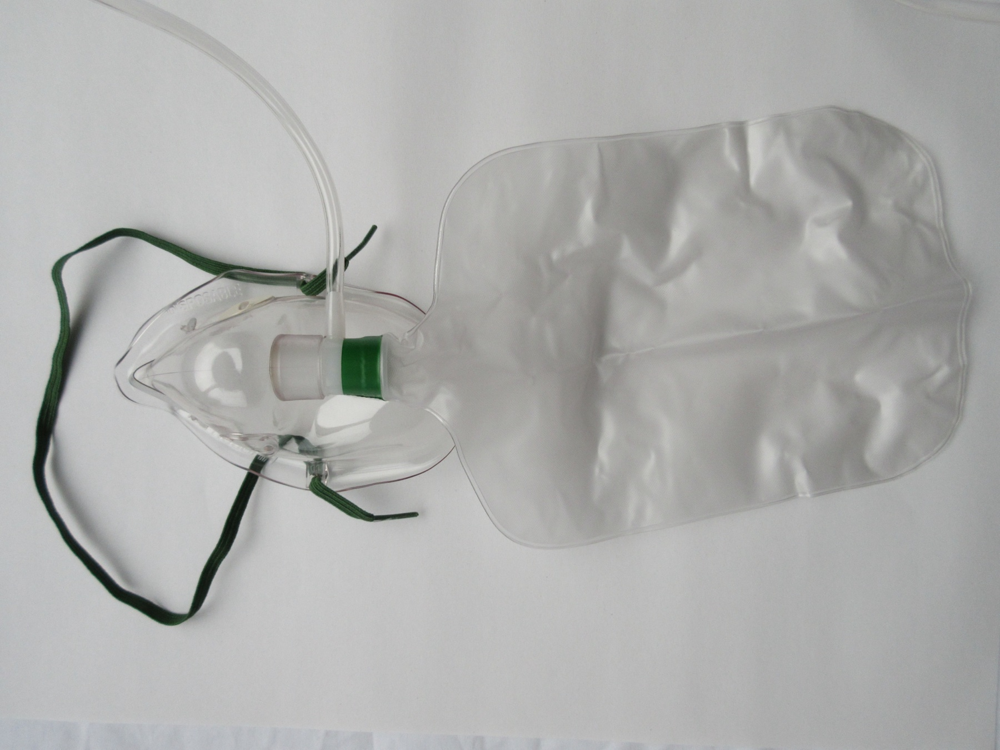
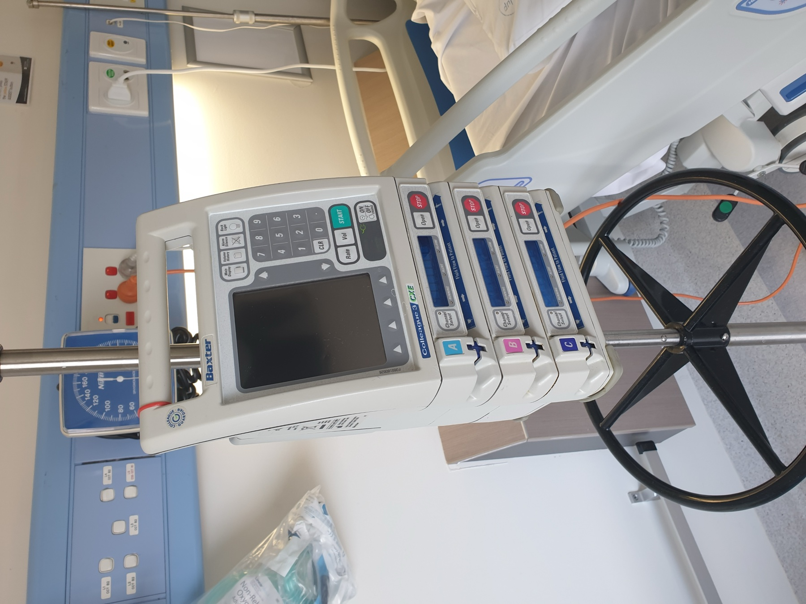

Conduta da asfixia: ressuscitação intrauterina e a via mais rápida
A ressuscitação intrauterinaVia mais rápida ≠ cesáreaSe não corrige: via mais rápidaCat III reversível: taquissistoliaConduta consolidada
🚨 Ao final desta página você vai saber:
As 4 medidas da ressuscitação intrauterina (o que se faz antes de tirar o bebê);
Por que "via mais rápida" não é sinônimo de cesárea;
Quando uma Categoria III é reversível e não vai para parto imediato;
A conduta consolidada das três categorias, de ponta a ponta.
A ressuscitação intrauterina
Diante de uma Categoria III, a primeira coisa não é a cesárea — são as medidas conservadoras, aplicadas antes de partir para o parto, que juntas se chamam ressuscitação intrauterina. São quatro: máscara de oxigênio; decúbito lateral esquerdo; fechar o soro de ocitocina; e corrigir a hipotensão, se presente (soro fisiológico / ringer). Cada uma ataca uma via da hipóxia: O2 aumenta a oferta; o DLE descomprime os grandes vasos e melhora o fluxo uteroplacentário; fechar a ocitocina reduz as contrações que comprimem a placenta; corrigir a hipotensão restaura a pressão de perfusão. É "ressuscitar" o feto ainda dentro do útero.
Herói — a escada continua em conduta
Interativo: acione cada degrau para ver a conduta da categoria.
A mesma gramática da escada, agora em conduta: Cat I acompanhar · Cat II complementar (PBF) ou repetir a CTG · Cat III ressuscitação intrauterina e, se não corrige, parto pela via mais rápida (fórceps se critério, senão cesárea). O relógio conta em paralelo — a medida heroica é o último degrau.
Esquema — a ressuscitação intrauterina (4 gestos)
Interativo: clique em cada medida para ver o mecanismo que ela corrige.
Cada gesto ataca uma via da hipóxia: O2 (oferta) · DLE (descomprime os grandes vasos) · fechar a ocitocina (reduz as contrações que comprimem a placenta) · corrigir a hipotensão (restaura a perfusão). É "ressuscitar" o feto dentro do útero, antes da via mais rápida.

Máscara de O2 (não-reinalante, ~10 L/min) → aumenta a oferta ao sangue uteroplacentário.

Bomba de infusão IV → fechar a ocitocina (reduz metrossístole) e infundir cristaloide (Ringer/SF) p/ corrigir a hipotensão.
↰
Decúbito lateral esquerdo → descomprime cava/aorta e melhora o fluxo uteroplacentário.
Ressuscitação intrauterina rotulada — cada elemento com sua medida
Não há foto única da cena completa em licença livre; o painel compõe os elementos reais legendados (O2 · bomba de infusão) com o DLE em esquema, cada um com o mecanismo que corrige — sem duplicar o fórceps (teaser exclusivo da próxima etapa).
Lastro dos rótulos: Velayudhareddy & Kirankumar, Management of foetal asphyxia by intrauterine foetal resuscitation, Indian J Anaesth 2010;54(5):394 — CC BY.
O2: ICUnurses, Wikimedia Commons — CC BY-SA 4.0. Bomba: Orderinchaos, Wikimedia Commons — CC BY-SA 4.0. · página de origem (rótulos)
"Via mais rápida" ≠ cesárea automática
Pegadinha central da conduta: "via mais rápida" não significa cesárea automática. Se houver critério de aplicabilidade, o fórceps pode ser a via mais rápida — resolve o expulsivo em minutos, sem abrir o abdome. Se não houver critério, aí sim a cesárea. "Mais rápida" é a que tira o bebê primeiro no cenário específico, não um sinônimo de cesárea.
Se não corrige: parto pela via mais rápida
Se a ressuscitação intrauterina não corrige o padrão, o parto é feito pela via mais rápida. E o tempo conta: enquanto se tenta corrigir, a sala já é preparada. Não se espera a ressuscitação falhar para só então começar a montar a sala — as duas coisas correm em paralelo, porque o relógio da asfixia não para. Sobe-se a escada da conduta; a medida heroica (tirar o bebê) é o último degrau, e o cronômetro corre o tempo todo.
Categoria III → ressuscitação intrauterina
↓
Corrigiu?
SIM acompanha
NÃO parto pela via mais rápida
↓ (via mais rápida)
Critério de aplicabilidade do fórceps?
SIM fórceps
NÃO cesárea
A Cat III reversível: a taquissistolia por ocitocina
Nem toda Categoria III vai para parto imediato: quando a causa é reversível, trata-se a causa primeiro. A causa iatrogênica clássica é a taquissistolia uterina por ocitocina — excesso de contração induzida pelo soro. Fecha-se o soro de ocitocina e a cardiotocografia melhora. É a Cat III que se resolve sem bisturi: a taquissistolia comprimia a placenta contração após contração; removido o excesso, o feto se recupera. Reconhecer a Cat III reversível evita uma cesárea desnecessária.
Enriquecimento de corte · ACOG/FEBRASGO (acréscimo, não fala da fonte)
A taquissistolia tem definição numérica: > 5 contrações em 10 minutos, em média avaliada numa janela de 30 minutos (com ou sem alteração da FCF). Quando associada a alteração da FCF, é o gatilho para fechar a ocitocina. A fonte nomeou a taquissistolia sem dar o número; este corte entra como enriquecimento sourced.
A conduta por categoria, consolidada
Fechando a leitura em conduta de ponta a ponta, o gancho do expulsivo com sofrimento agudo depende do critério de aplicabilidade do fórceps — o próximo passo da história, que fica em suspense.
Quiz — fixação
Categoria III num traçado durante indução com ocitocina, com contrações muito frequentes (taquissistolia). Antes de indicar cesárea, a conduta que pode reverter o quadro é:
B) Correta. Taquissistolia por ocitocina é a Cat III reversível clássica; fechar o soro corrige a causa e melhora o traçado, evitando cesárea desnecessária.
A) "Acelerar o parto" soa resolutivo, mas piora a causa. Aumentar a ocitocina agrava a taquissistolia e a hipóxia.
C) A exceção é o ponto cobrado. Nem toda Cat III vai a parto imediato; a reversível se trata na causa.
D) Transplanta periodicidade de outro cenário. É conduta de vigilância crônica/eletiva, incompatível com asfixia aguda.
A expressão "parto pela via mais rápida" na conduta da Categoria III significa:
B) Correta. "Mais rápida" é contextual: com critério, o fórceps resolve o expulsivo em minutos; sem critério, cesárea. Não é sinônimo de via fixa.
A) Associa "rápido/definitivo" a cesárea. Cesárea é uma das vias, não a definição; num expulsivo com critério, o fórceps é mais rápido.
C) Inverte a regra para o outro extremo. O fórceps depende de critério de aplicabilidade; sem ele, é cesárea.
D) Contradiz o próprio cenário de urgência. Na asfixia não se aguarda parto espontâneo; o tempo é inimigo.
O fio para a próxima página
A cardiotoco é o primeiro exame a se alterar — mas nem sempre basta sozinha. Quando ela não fecha o cerco, entra o exame que soma quatro parâmetros de ultrassom a ela.
Sobe a escada; a medida heroica é o último degrau, e o relógio conta.